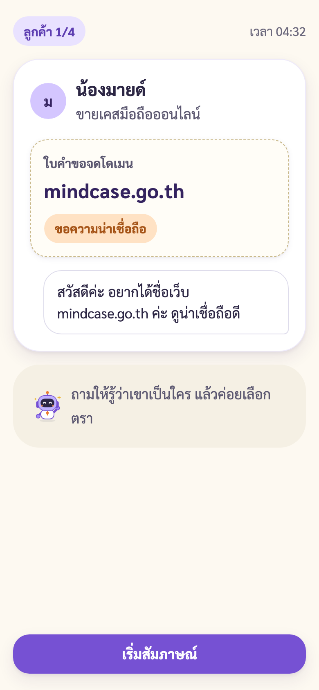
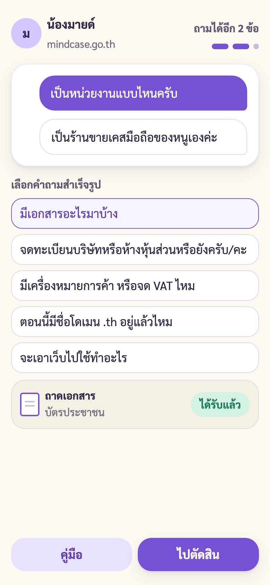
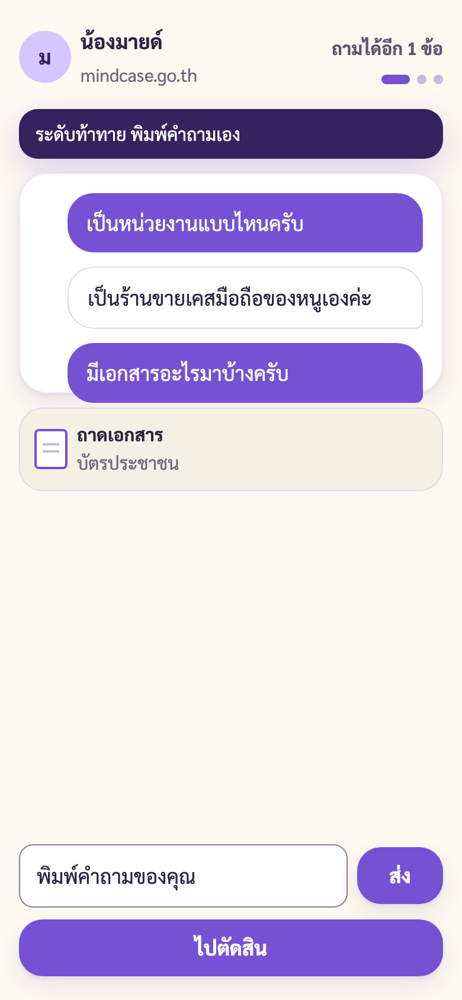
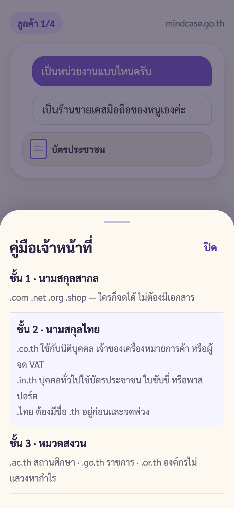

ภารกิจด่านที่ 3 เคาน์เตอร์รับจดโดเมน
ช่วงที่ 3 เคาน์เตอร์ (วนตามจำนวนลูกค้า 3-4 คน)
S09 ไป S10 หรือ S11 / เปิดคู่มือ S12 ได้ทุกเมื่อ
S09 ลูกค้ามาถึง

→
S10 สัมภาษณ์ กดปุ่ม (ง่าย กลาง)

→
S11 สัมภาษณ์ พิมพ์เอง (ท้าทาย)

→
S12 คู่มือเจ้าหน้าที่
